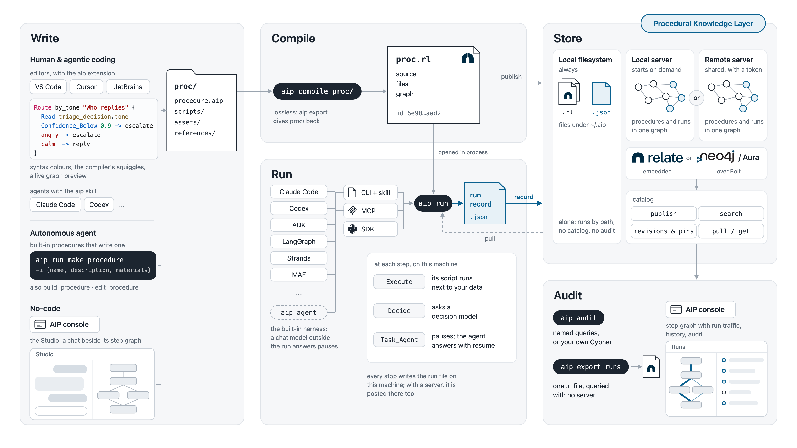
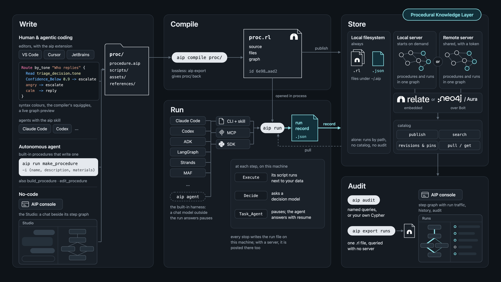
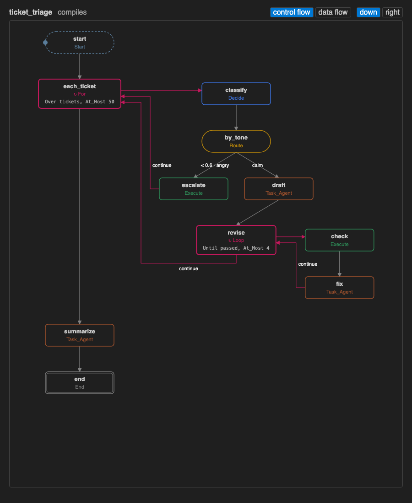
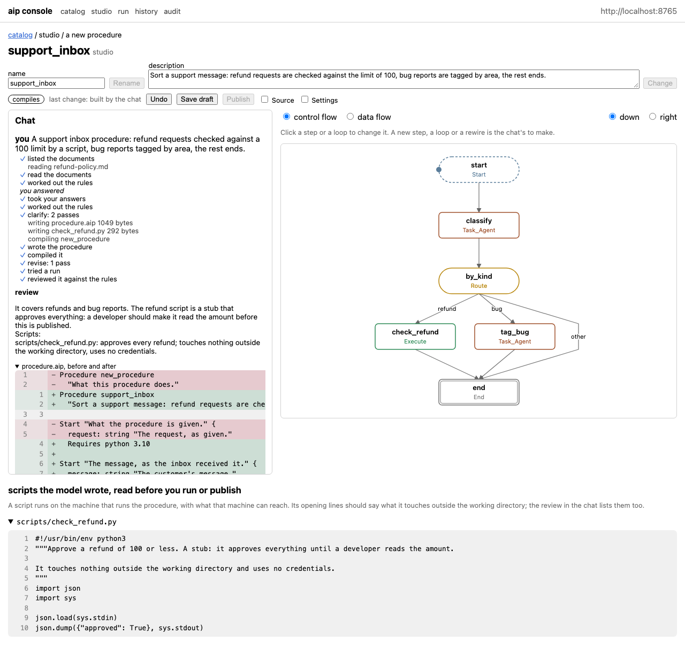
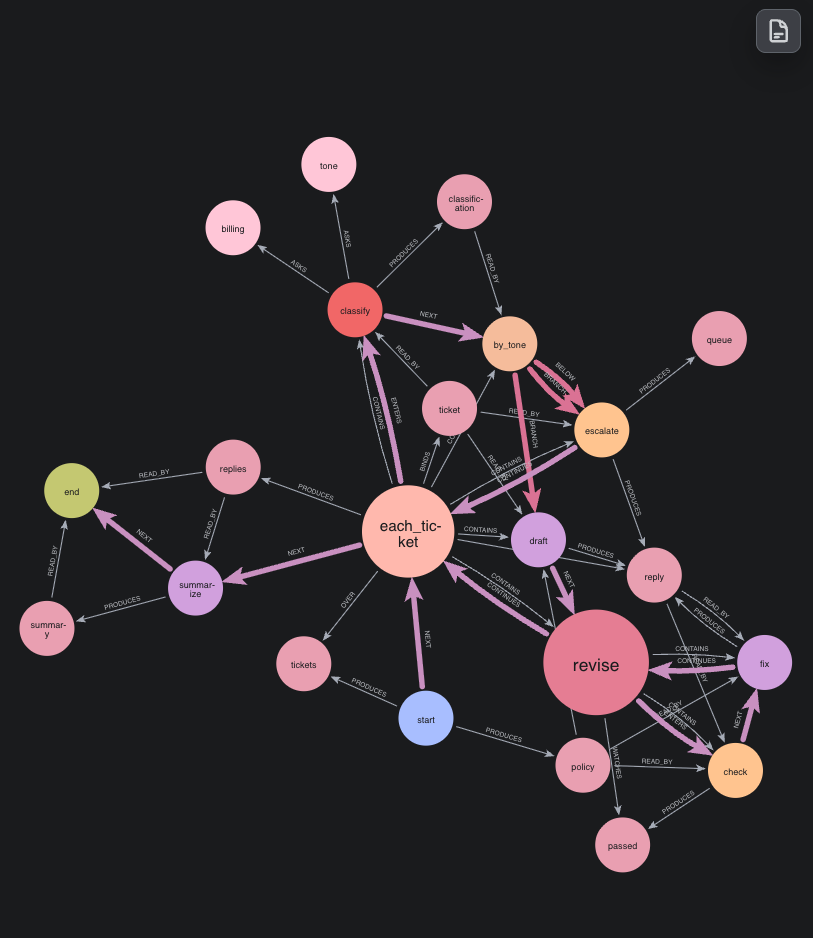
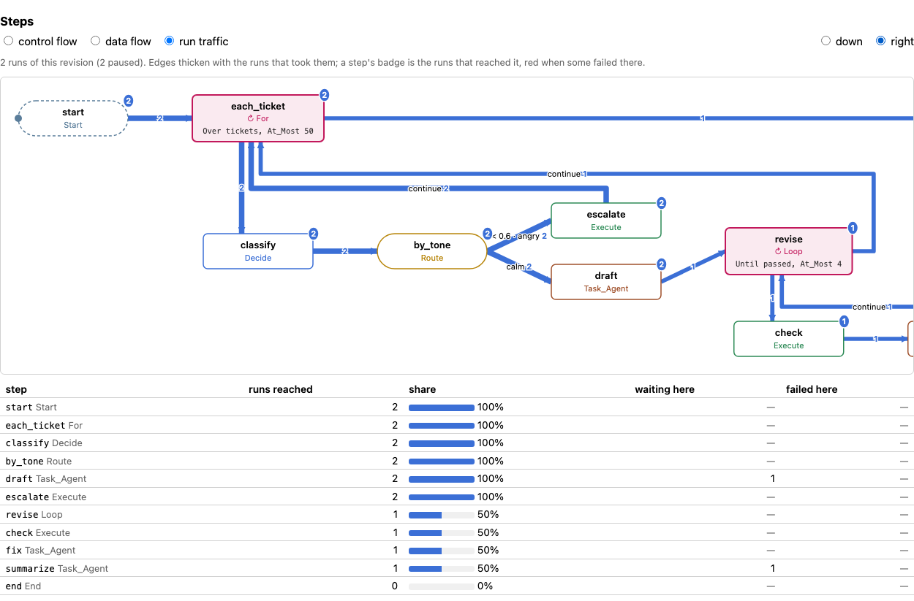

A procedure is a small program a compiler can check
Seven kinds of step, two kinds of loop, no expressions. The procedure is a finite state machine; what makes it useful is what its steps call out to: a decision model, a script, an agent.
Seven kinds of step
Start Decide Route Aggregate Execute Task_Agent End
Every step is a card: what it reads, its own lines, what it produces, where it goes.
No expressions, by design
No arithmetic, no logical operators, no function calls; text is built only by {key} interpolation. Computation is an Execute step.
Every run ends
Every cycle is a loop with a cap (At_Most n), so a run ends in a number of steps you can compute from the file. Not Turing-complete, on purpose.
Keys are written once
Along any path a key has one producer. Two exceptions: the arms of a route may each write it, and a loop body may rewrite a key from before the loop (a fold). A For keeps per-pass keys only with Collect … Into.
Conditions are on answers
A Route, an Until or an aggregation reads one answer; nothing else in the state can be branched on. A decision model's answers carry a confidence the procedure can check.
Logic lives in scripts
Anything that computes is a script in scripts/: JSON in on stdin, JSON out on stdout. Python by default; any interpreter with a Command line.
One procedure, every kind of step
From examples/language/ticket-triage: a batch of tickets, each classified by a model, routed, answered by the agent or escalated by a script.
For each_ticket Over tickets As ticket, At_Most 50, Collect reply Into replies { Decide classify classify_question { Read ticket Answer_Questions { billing: true_or_false "Is this a billing question?" tone: choice [calm, angry] "How does the customer sound?" } Produce classification Next_Step by_tone } Route by_tone "Calm customers get a drafted reply; angry or uncertain ones are escalated." { Read classification.tone Confidence_Below 0.6 -> escalate calm -> draft angry -> escalate } Task_Agent draft "Write a reply that follows the policy." { Read ticket, policy Produce reply: string Next_Step revise } Execute escalate "Open a ticket in the tier-2 queue." { Read ticket Run_Script scripts/escalate.py Produce reply: string queue: string Continue }
| Step | Who does the work |
|---|---|
Start | the caller: typed inputs |
Decide | a decision model answers the questions, with confidence |
Route | the runtime branches on one answer; Confidence_Below sends unsure ones elsewhere |
Aggregate | the runtime combines answers: All, Any, None |
Execute | a script, JSON in and JSON out |
Task_Agent | the agent; the only step that pauses the run |
End | declares the result keys |
| Loop | What it is |
|---|---|
For x Over list | independent passes, one per item; batched |
Loop x Until a | passes that build on each other until an answer holds |
Loop x n Times | exactly n passes |
Every loop has a cap; at the cap it fails the run or exits, as written.
Answers carry their confidence
A decision model answers with a value and how sure it is. The procedure can check that number; the compiler makes sure it only checks numbers that exist.
# what a Decide writes, one answer per question
classification.billing {value: true, confidence: 0.82, noul: 0.91}
classification.tone {value: "angry", confidence: 0.9,
probabilities: {angry: 0.9, calm: 0.1}}A route checks it
Route by_tone "Who replies" { Read triage_decision.tone Confidence_Below 0.9 -> escalate angry -> escalate calm -> reply }
Below 0.9, or with no confidence at all, the route goes to escalate.
An aggregation sets a bar on each answer
Aggregate summarize_check "Every policy holds, and the model was sure of each." { Read verdicts Aggregations { all_hold: All verdicts.follows With Confidence_Above 0.7 } Produce check_summary Next_Step fix
The result is a true_or_false with no confidence, on purpose: the language never makes one confidence out of several.
Who answered decides what can be checked
| Source | Step | Confidence check |
|---|---|---|
| measured | Decide | yes |
| scripted | Execute | yes, if the script gave one |
| agent | Task_Agent | no: confidence_on_agent_answer |
| input · aggregated | Start · Aggregate | no: a compile error |
A procedure is a folder
The same shape as an Agent Skill: the procedure beside the scripts, assets and references it uses. The compiler checks that every path it names is there.
ticket-triage/ ├── procedure.aip the steps ├── scripts/ code an Execute step runs │ ├── escalate.py │ └── policy_check.py ├── assets/ prompts and files a step uses └── references/ documents a task may load
Limits today
- One
Requiresper procedure, checked before the first script runs - A script other than Python needs a
Commandline - An asset reaches a step as a file, not a key: data the state needs comes in at
Startor from a script that reads it - A script runs as you, with your credentials: read it before you run it
A script's contract
# stdin: one JSON object {"state": {"reply": "…", "policy": "…"}, # the keys it reads "assets": {"fix": "…"}, # the files it uses "expects": {"passed": "true_or_false"}} # what it must produce # stdout: exactly those keys {"passed": true}
- Run as
python scripts/<file>, or by itsCommand - Files go under
$AIP_WORKDIR, the run's working directory - 300 seconds per script by default (
aip config --script-timeout) - A non-zero exit or bad JSON fails the step;
aip resumeretries it
Four ways to write one, one file at the end
Whoever writes it, the result is the same folder, checked by the same compiler (aip compile --check).
Editors

- VS Code extension: colours, the compiler's squiggles, a live graph preview
- Cursor and Windsurf take the same .vsix
- JetBrains and Sublime: colours, from the TextMate grammar
Coding agents
$ aip compile --check proc/ procedure.aip:30:3: error missing_branch: Route by_tone has no branch for angry
- Claude Code, Codex, any agent with the aip skill
- The skill carries the language on one page (
references/language.md) - The agent writes, compiles, fixes until it compiles
Autonomous agent
aip run make_procedure
-i {name, description,
materials}- A built-in procedure that writes a procedure: the agent writes, the compiler checks, round until clean
build_procedurereads documents and asks a person the open questions;edit_procedurechanges one
No-code: the Studio

- In the AIP console: a chat that runs build and edit, the step graph beside it
- Forms for field edits; the scripts a model wrote are shown before anything runs
aip compile: check everything, then write one file
Nothing runs unchecked: running a folder compiles it first, and a bundle is verified again every time it is opened.
One mistake, one error, at its line
$ aip compile --check ticket-triage/ procedure.aip:30:3: error missing_branch: Route by_tone has no branch for angry; a route names every value classification.tone can take procedure.aip:42:3: error missing_requires: Execute escalate runs a script, but the header declares no Requires procedure.aip:77:26: error unavailable_key: queue is produced inside For each_ticket, whose keys are per-pass and gone when the loop exits; Collect queue Into <list> keeps them procedure.aip: 3 errors
The same JSON feeds the editor's squiggles and the Studio's graph.
What the checker catches
unreachable_step | nothing leads to a step |
cycle_without_loop | a cycle outside a loop |
missing_cap | a loop with no At_Most |
unavailable_key | a key some path never produced |
duplicate_producer | a key written twice on one path |
missing_branch | a route misses a value |
confidence_on_agent_answer | checking a number that isn't there |
missing_file | a script or prompt that isn't in the folder |
The bundle
- One file: the source byte for byte, every file, and the graph
- Its id is the hash of the source and the files, nothing else: same folder, same id
- Lossless:
aip exportwrites the folder back
Relate: a graph database in one file
The bundle, the local store and an exported audit are each a Relate file: a whole Cypher graph you can copy, commit or mail, opened in process with no server.
Cypher, embedded
- An openCypher engine in a single binary, written in Rust
- 100% of the openCypher TCK 2024.3 (3,892 of 3,892 scenarios), Cypher 25 features
- In process from Python, JavaScript (Node and WASM), Java, Go and Rust
One file, or a server when you want one
- A store is a directory or one file; durable with a write-ahead log
- Serves the HTTP Query API, MCP and Bolt on demand, so Neo4j Browser connects
- Pulls a subgraph from Neo4j or Aura, and pushes one back
How AIP uses it
- The compiler writes the bundle's graph with one body of Cypher
- The runtime loads the bundle into memory and reads each step with a Cypher query as the run reaches it
- The server's store is a Relate file by default; the same statements run on Neo4j or Aura
Fit: one process, memory-resident, one writer. Larger graphs and many writers belong in Neo4j.
The bundle is a graph: steps, control flow, data flow
ticket-triage.rl in Neo4j Browser, served read-only by Relate over Bolt. The same graph the console draws.

| Group | Nodes and edges |
|---|---|
| Nodes | Procedure Step (+ its kind) Loop Data Question Aggregation File |
| Control flow | NEXT BRANCH {value} BELOW {below} ENTERS CONTINUES CONTAINS |
| Data flow | PRODUCES READ_BY {field, source} |
| Loops | OVER BINDS COLLECTS WATCHES |
| Decisions | ASKS AGGREGATES |
| Files | RUNS PROMPTED_BY USES HAS_FILE |
Every node carries the bundle id, so many bundles share one store.
Every edge a run can take
MATCH (p:Procedure {name: 'ticket_triage'}) MATCH flow = (p)-[:STARTS_AT]->() -[:NEXT|BRANCH|BELOW|ENTERS|CONTINUES*]->() RETURN flow
Who produces what, and who reads it
MATCH (w)-[:PRODUCES]->(d:Data)-[e:READ_BY]->(r) RETURN w.name AS producer, d.name AS data, r.name AS reader
Which routes an agent steers
MATCH (r:Route)<-[e:READ_BY]-(d:Data) WHERE e.source = 'agent' RETURN r.name, d.name
aip run walks the graph, one step at a time
A run loads the bundle into memory and follows it on the machine that runs it: scripts next to the data, decisions from a model, tasks handed to the agent. It stops when it pauses, ends or fails.
| Step | At run time |
|---|---|
Start | checks the inputs against their declared types |
Decide | sends the questions to the decision model; records every answer whole. No model, no answer: it never answers by hand |
Route | fires its confidence check when the answer is below the bar or has none; otherwise branches on the value |
Aggregate | applies All, Any or None over the answers, with an optional bar on each |
Execute | checks Requires, runs the script from the cache, reads its JSON |
Task_Agent | renders the prompt and pauses for the agent |
End | returns the keys the path produced |
Loops
- A cap is checked before the first pass; at the cap the run fails or exits, as written
Forpasses run in batches of 10 (--batch)- A batch whose body is one
Decideis one call to the model - Passes waiting at one step go out as one pause with several tasks
- Batching never changes a result
Stays put
- A run stays on the exact bundle it started on
- Every stop writes the run file; with a server, it is posted there too
The agent's turn: pause, answer, resume
Only a Task_Agent pauses. The run hands over the task and waits; the answer is checked strictly before anything moves.
What the agent receives
{"paused": "task", "step": "triage",
"tasks": [{
"index": 0,
"prompt": "Read the customer's message and classify it. …",
"state": {"message": "I was charged twice for March."},
"references": [],
"answer_with": {"billing": "true_or_false", "tone": "choice"},
"labels": {"tone": ["angry", "calm"]}}],
"hint": "answer with {\"billing\": true | false, …}",
"run_id": "4f1c9a2e7b3d5068"}What it sends back
$ aip resume 4f1c9a2e7b3d5068 --answers '{"billing": true, "tone": "calm"}'Strict
- A missing key, an extra one, or a value outside the labels is
invalid_output: nothing is applied, the pause stands - Several tasks at once (a batch) are answered together, keyed by
index - Inside a capped loop a task says
pass_ofandlast_pass
Errors say what to do
script_failed timeout requires_unmet | fix the cause, resume: the step runs again |
no_decision_model decision_model_failed | configure the model, resume |
invalid_output | answer again |
loop_cap | the run is over |
Any agent can drive a run, with no new code
Claude Code, Codex, ADK, LangGraph, Strands, Microsoft Agent Framework: anything with a shell or MCP. The procedure decides what happens; the agent answers its tasks.
CLI + the aip skill
aip search "charged twice" aip info billing_support aip run billing_support -i … aip resume <run> --answers …
aip skill installputs the skill in the agents on this machine- The skill tells the agent: search, run, answer pauses, never do the steps by hand
MCP
aip mcp # stdio aip mcp --http PORT # HTTP
- Seven tools:
searchdescribecompilerunresumeagentpull - A pause or an error is a tool result, not an MCP error
- The client's name becomes the run's agent
Python SDK
result = client.run(
"billing_support",
{"message": "…"})
while isinstance(result,
aip.Paused):
result = client.resume(
result, answers_for(result))
print(result.result)- Every command is one call: run, resume, agent, search, publish, audit…
aip agent: the built-in harness
- The model lives outside the run:
run, then one call per pause,resume - It drives
assist: search, run, resume, publish, finish; builds withbuild_procedure - No tools: everything it can do is a step; the runtime never calls a model
- Any Chat Completions endpoint; Anthropic's by default
- Finishes with the result or a question;
aip agent "<reply>"carries on
Files always; one server when you want more
Every run writes its files on the machine that ran it. Point the client at a server, local or remote, and procedures and runs land in one graph: a catalog to search and a record to audit.
Local filesystem · always
~/.aip/bundles/<id>.rl ~/.aip/runs/<run_id>.json ~/.aip/cache/<id>/
- Every bundle a run used, every run file, scripts unpacked once per bundle
- Alone: run by path, no catalog, no audit
Local server · starts on demand
aip config server local
- The installer's default; listens on
127.0.0.1:8247, loopback only, no token - Started by the first command that needs it, stopped after 15 idle minutes
- One Relate file:
~/.local/share/aip/server/store.rl
Remote server · shared
aip config server URL --token T
- Tokens with scopes
read,run,publish; a token's name is the run'suser - Relate, or Neo4j / Aura over Bolt when a team shares it
- A run never fails because a server is down: the stop is just not recorded
The catalog
aip publishverifies the bundle (hashes, id, graph) and gives it the next revision of its name- A bundle is stored by its id: publishing the same content twice changes nothing
aip search: BM25 over names, descriptions, Use_When lines and steps; an exact name wins
name,name@3orname@latest;aip pinandaip retire(retire wins over pin)- A run of a folder is recorded as a draft unless that exact bundle is published
- Ships with
make_procedure,build_procedure,edit_procedure
Procedures and runs in one graph
The server stores each bundle's graph as compiled and writes the record beside it. Every history entry points at the step it ran, so a question about runs is a question about the procedure too.
What an entry keeps
- Every entry: step, kind, pass, when, how long, what it read and produced
- A
Decide: the model, its answers with confidence and probabilities - A
Route: what it read, where it went, whether its check fired and on what numbers - A
Task_Agent: who answered it, and what answering took
Two backends, one set of statements
The same Cypher writes, searches and audits on both.
Questions over the record, by name or in Cypher
aip audit runs named queries over the store; the console shows the same lists. Every query is read-only: it runs in a transaction that is never committed.
Over the recent runs
confidence-fired | how often each route's check fired, and why |
model-answers | what the model answered, least sure first |
failing-aggregations | aggregations that did not hold |
failing-scripts | scripts runs stand failed at |
agent-work | tasks, tool calls and tokens per agent step |
untaken-branches | branches no run took |
repeated-cycles | loops that went round more than expected |
Over each published procedure
agent-routes | routes an agent's answer steers |
lineage | every key a result is derived from |
cycles | every loop and what bounds it |
unused-data · empty-results · missing-fields | procedures to tidy |
Your own: routes whose confidence check fired
MATCH (r:Run)-[:HAS_ENTRY]->(e:Entry {kind: 'Route'}) -[:AT]->(route:Route) WHERE e.check_fired = true RETURN r.name AS procedure, route.name AS route, e.check_reason AS reason, e.check_confidence AS confidence, e.check_below AS bound, e.to AS went_to
$ aip audit --save fired-checks --cypher '…' $ aip audit fired-checks --name ticket_triage --window 100
A stored query is refused if it writes or does not parse (checked with EXPLAIN). Filters: name agent session user draft window.
The AIP console, and one file for an auditor
The console draws the record over the step graph; an export puts the runs and the procedures they ran in one file anyone can query with no server.

AIP console
- Run traffic: each edge as thick as the share of runs that took it; badges for runs reached, red where some failed
- A run's page: its path over the graph, every decision's confidence, every check that fired
- History by procedure, status, agent, session, user; the audit queries as lists
Export
$ aip export runs ticket_triage --since 2026-11-01 -o audit.rl
$ relate query --database audit.rl \
"MATCH (r:Run) RETURN count(r)"- The matching runs, the graphs of the bundles they ran, and their revisions
- Every query that works on the server works on the file
Where it lives
All of it is public since 11 November 2026, the day Relate was announced. 0.9 is a branch of the public repository and its plan is an issue there; the released packages are still 0.7.
Current · 0.9, in progress (with Relate)
| github.com/zach-blumenfeld/aip branch release-0.9.0: language, compiler, runtime, server, console and VS Code extension in one repo; the plan is issue #29 |
this deckdocs/slides/ and the figure in docs/figures/ |
Released
| github.com/zach-blumenfeld/aip | v0.7.0, 2 Nov 2026 |
| pypi.org/project/agent-instruction-protocol | 0.7.0 |
| github.com/zach-blumenfeld/aip-console | v0.7.1, 3 Nov 2026 |
| npmjs.com/package/aip-console | 0.7.1 |
| github.com/relatedb/relate Relate, the engine a bundle is written in | v1.0.0, 11 Nov 2026 |
| pypi.org/project/relate-db | 1.0.0 |
| relatedb.ai | docs |